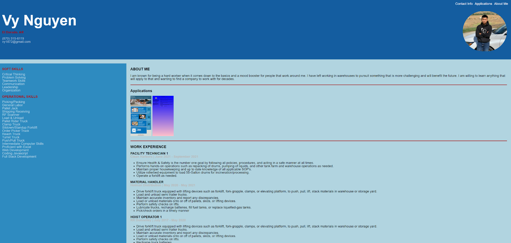

ABOUT ME
I am known for being a hard worker when it comes down to the basics and a mood booster for people that work around me. I have left working in warehouses to pursuit something that is more challenging and will benefit the future. I am willing to learn anything that will apply to that and wanting to find a company to work with for decades.
Applications
Vy's Portfolio

WORK EXPERIENCE
FACILITY TECHNICIAN 1
Clean Harbors | June 2021 - September 2021
- Ensure Health & Safety is the number one goal by following all policies, procedures, and acting in a safe manner at all times.
- Performs hands-on operations such as repacking of drums, pumping of liquids, and other tank farm and warehouse operations as needed.
- Maintain proper housekeeping and up to date knowledge of all applicable SOP's.
- Utilize rollerbed equipment to load 55-Gallon drums for incineration/processing.
- Operate a forklift as needed.
MATERIAL HANDLER
Holman Distribution | May 2020 - May 2021
- Drive forklift truck equipped with lifting devices such as forklift, fork-grapple, clamps, or elevating platform, to push, pull, lift, stack materials in warehouse or storage yard.
- Load and unload semi trailer trucks.
- Maintain accurate inventory and report any discrepancies.
- Load or unload materials onto or off of pallets, skids, or lifting devices.
- Perform safety checks on lifts.
- Lubricate trucks, recharge batteries, fill fuel tanks, or replace liquefied-gas tanks.
- Pick/check orders in a timely manner
HOIST OPERATOR 1
RR Donnelley | July 2017 - May 2020
- Drive forklift truck equipped with lifting devices such as forklift, fork-grapple, clamps, or elevating platform, to push, pull, lift, stack materials in warehouse or storage yard.
- Load and unload semi trailer trucks.
- Maintain accurate inventory and report any discrepancies.
- Load or unload materials onto or off of pallets, skids, or lifting devices.
- Perform safety checks on lifts.
- Recharge truck batteries.
- Pick/check orders in a timely manner
- Use company's software to print out orders for the pickers
- Ensure orders are shipped on scheduled day
CAR DETAILER
Family Auto Sales | April 2017 - July 2017
- Cleaning vehicle interiors and exteriors in compliance with all company standards and client requests.
- Operating buffers, steamers, hoses, vacuums, and other equipment to meet service expectations
- Using cleaning, protective, and restorative agents to maintain and enhance the appearance of vehicles.
- Performing inspections and keeping complete, accurate records of the vehicle's condition.
- Moving and parking vehicles, delivering vehicles to correct locations or picking owners or drivers up if needed.
- Managing inventory and organizing supplies.
- Responding to client inquiries and fulfilling their requests.